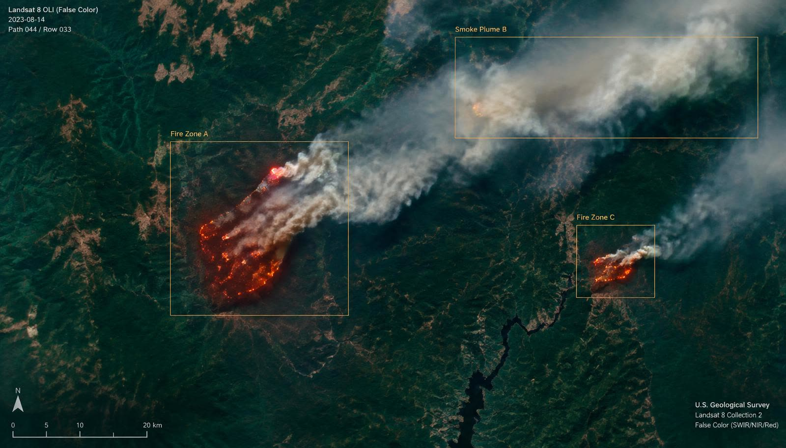

Earth observation data
A labeled wildfire and smoke dataset built from Landsat-8/9, GOES-16, and other public sources, including harmonized products with aligned spectral bands.
IGARSS 2026 · Washington, DC
1 University of Maryland, Baltimore County

Wildfires are a growing threat to ecosystems, human lives, and infrastructure, with their frequency and intensity rising due to climate change and human activities. Early detection is critical, yet satellite-based monitoring remains challenging due to faint smoke signals, dynamic weather conditions, and the need for real-time analysis over large areas. We introduce WildfireVLM, an AI framework that combines satellite imagery wildfire detection with language-driven risk assessment. We construct a labeled wildfire and smoke dataset using imagery from Landsat-8/9, GOES-16, and other publicly available Earth observation sources, including harmonized products with aligned spectral bands. WildfireVLM employs YOLOv12 to detect fire zones and smoke plumes, leveraging its ability to detect small, complex patterns in satellite imagery. We integrate Multimodal Large Language Models (MLLMs) that convert detection outputs into contextualized risk assessments and prioritized response recommendations for disaster management. We validate the quality of risk reasoning using an LLM-as-judge evaluation with a shared rubric. The system is deployed using a service-oriented architecture that supports real-time processing, visual risk dashboards, and long-term wildfire tracking, demonstrating the value of combining computer vision with language-based reasoning for scalable wildfire monitoring. The code and dataset are publicly available on GitHub.
A labeled wildfire and smoke dataset built from Landsat-8/9, GOES-16, and other public sources, including harmonized products with aligned spectral bands.
Fire zones and smoke plumes are localized in satellite imagery, targeting small and complex patterns that are easy to miss at scale.
Multimodal LLMs turn detections into contextualized risk assessments and prioritized response recommendations for disaster management.
Risk reasoning quality is checked with an LLM-as-judge evaluation on a shared rubric, served by a service-oriented architecture with real-time dashboards.
@inproceedings{ayanzadeh2026wildfirevlm,
title = {WildfireVLM: AI-powered Analysis for Early Wildfire Detection and
Risk Assessment Using Satellite Imagery},
author = {Ayanzadeh, Aydin and Dixit, Prakhar and Kamal, Sadia and Halem, Milton},
booktitle = {IEEE International Geoscience and Remote Sensing Symposium (IGARSS)},
address = {Washington, DC, USA},
year = {2026}
}